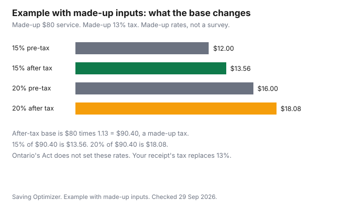

Personal Care · Canada
How Much to Tip Hairdressers, Barbers and Nail Techs in Canada
A tip at a salon is a voluntary payment, a decision about the household budget, and, in Ontario, a set of rules about who may keep it. No national percent is given here. No dated Canadian tipping survey is cited here, so no typical percent appears. The dollars still need a place in the month, next to the haircut itself. What a cut costs before the tip is the haircut cost guide. A student clinic is the beauty-school guide. Colour at home versus in the chair is the home-colour guide.
Key takeaways
- This guide states no tipping percent. A percent belongs on a dated, named source. None is used here.
- Ontario's Employment Standards Act guide, updated 8 July 2024, says an employer generally cannot take an employee's tips except as the Act allows. A tip pool is one of those exceptions. An employer shares in the pool only in narrow cases.
- A service charge is a tip when a reasonable person would believe employees keep it. Read the menu or the receipt before you add a second amount on the terminal.
- The terminal may offer a pre-tax base or an after-tax base. The same made-up rate produces a different dollar tip. That is arithmetic, not a custom.
- Put the tip in the monthly budget as its own line, using the zero-based budget. A holiday tip is the same kind of line, planned, not a surprise percent.
Common tipping ranges
People repeat percents as if a province had passed them. Ontario's guide to the Employment Standards Act does not set a percent for a haircut, a barber, or a nail service.
It defines a tip or other gratuity, and it limits what an employer may do with one. British Columbia, Quebec, and the other provinces write their own employment rules. This guide quotes Ontario because that is the page cited here (as of 29 Sep 2026). If you live elsewhere, use your province's employment-standards page before you treat Ontario's sentences as yours.
What you can decide, without a fake average, is the base and the reason. The base is the number the terminal multiplies: the service before tax, or the service after GST, HST, or QST. The reason is whether you are thanking the person who did the work, covering a charge the salon already added, or both. Write the dollar amount you choose. A percent is optional private arithmetic. It is not a figure this page will print as normal.
If a friend quotes a percent, ask them for the source and the date. Until that source is in front of you, their percent is a personal habit. Habits differ by city and by shop. They are not a bill.
Owner vs employee
Ontario's guide, as of 29 Sep 2026, says a tip or other gratuity includes a payment a customer voluntarily leaves for an employee, a payment the customer voluntarily gives the employer for employees, and a service or similar charge the employer imposes, where a reasonable person would believe employees keep it or share it. Whether a particular charge meets that test depends on the circumstances. A credit-card processing fee is partly carved out: the employer may exclude the greater of the card company's percent of the tip and 1.5 percent of the tip. Debit-card fees may not be deducted from tips under that page.
An employer generally cannot withhold tips, deduct from them, or make an employee return them, except for a statute, a court order, or a tip pool that is redistributed to employees. Tips are not wages for minimum wage, termination pay, severance, vacation pay, public holiday pay, or the overtime rate. Since 21 June 2024, the employer must pay tips by cash, cheque, or direct deposit to an account the employee chooses. There is no set payday for tips in the Act, but an unreasonable delay can count as withholding.
Owners are not forbidden to receive a tip a customer gives them directly. They cannot take a share of a tip pool unless they are a sole proprietor, partner, director, or shareholder, and they regularly perform, to a substantial degree, the same work as the employees who share the pool, or the same work as tipped employees in that industry. If the employer has a policy of sharing in the pool, Ontario requires that policy to be posted where employees can see it, effective 21 June 2024. If you are unsure who did the work, ask. Paying the owner is allowed when you mean to pay the owner. It is a different decision from paying the stylist who is an employee.
Tipping on discounted services
A discount changes the service price. It does not, by itself, tell you whether a tip is expected.
Calculate any tip you choose on the amount you actually pay for the service, and decide whether tax is inside that base. A half-price cut is still the stylist's time. A service charge printed on a student or promotion menu may already be the gratuity. Add a terminal tip on top only after you know the charge is not already shared with staff.
The chart on this page is an example with made-up inputs. The service is a made-up $80 before tax. The tax add-on is a made-up 13 percent, so the after-tax base is $90.40. The rates are a made-up 15 percent and a made-up 20 percent. They are not a Canadian survey and not Ontario's rule. Fifteen percent of $80 is $12. Fifteen percent of $90.40 is $13.56. Twenty percent of $80 is $16. Twenty percent of $90.40 is $18.08. The gap is the base, not a moral difference. Your province's sales tax is whatever is on the receipt. Replace 13 percent with that rate if you want the same comparison at home.
A coupon, a gift card, or a standing discount should be applied before you pick the base, so you are not tipping on a price you did not pay. If the salon asks for a tip on the pre-discount price, that is a request. It is not a figure from the Employment Standards Act.
Holiday tipping
December does not create a legal extra. A holiday tip is another voluntary payment, often given in cash to the person who cuts your hair through the year.
Plan it the way you plan the rest of the appointment: decide the dollar amount in November, and put it on the same budget line as the service. If you do not have a relationship with one stylist, you do not owe a seasonal gift to the shop. A card on the counter is the salon's choice to offer. It is not a bill.
If the salon runs a tip pool, Ontario allows the employer to set who shares and on what basis, and employees do not have to agree before a pool deduction is legal. You can still ask, as a customer, whether a December envelope goes to the person who served you. If the answer is no, hand the amount to that person if the shop allows it, or skip the envelope. Do not guess.
Building tips into the budget
Treat the tip as part of the visit, not as leftover change. If you book six cuts a year and you choose a dollar tip each time, multiply.
Example with made-up inputs: six visits and a made-up $12 tip is $72 a year, before the service price. That $72 is not a Canadian average. It is the product of two numbers you replace with your own. Add the service price from the haircut guide's method, then give the total a line in a zero-based budget. If the line does not fit, the lever is fewer visits, a student clinic, or a smaller tip you decided on purpose. It is not a percent you pretend is required.
A nail appointment and a barber visit use the same sheet: service price, tax, any service charge, tip you choose, and who receives it. Cap the whole personal-care stack, including boxes and refills, with the household subscription cap when those charges are recurring. A tip is not a subscription, but it is recurring if you go on a schedule.
Student clinics are a different setting. The beauty-school guide covers how a public clinic works. Read the clinic's own sign about whether tips are accepted. A student may not be an employee of a salon, so Ontario's tip-pool rules may not be the relevant page. Ask the clinic. Do not import a salon percent that this guide does not state anyway.
| Service | Who did the work | Service charge on the bill | Terminal prompt | Percent on this page |
|---|---|---|---|---|
| Haircut | Employee, or owner who did the cut | If a charge is printed, ask whether staff keep it before you add more | Note whether the buttons use the pre-tax total or the after-tax total | None stated |
| Colour or treatment | The person who did the chemical work, who may differ from the person who washed it | Same question. A large service makes the base choice more visible in dollars | Same prompt check | None stated |
| Barber | Employee or owner-operator | Same question | Same prompt check | None stated |
| Nail service | The technician, and any pool the shop posts | Same question. A shop policy on the wall beats a guess | Same prompt check | None stated |
| Student clinic | A student under a school's rules. Confirm before you assume an employment-standards tip pool applies | Read the clinic sign | If a terminal is used, check the base | None stated |

Sources
- Ontario, Your guide to the Employment Standards Act, Tips or other gratuities, updated 8 July 2024, published 22 November 2017, as of 29 Sep 2026. Definition of a tip, the ban on employers taking tips except as allowed, tip pools, the narrow case for an employer share, payment by cash, cheque, or direct deposit from 21 June 2024, and the credit-card fee exclusion (the greater of the processor's percent and 1.5 percent). Tips are not wages. No tipping percent is stated on that page.
- No dated, named Canadian survey of salon tipping is cited. No percent is printed as a norm.
- The made-up $80 service, 13 percent tax, and 15 and 20 percent rates exist only to show how the base changes the dollars.
Frequently asked questions
How much should I tip a hairdresser in Canada?
This guide does not state a percent. No dated Canadian survey is cited, and Ontario's Employment Standards Act guide does not set one. Choose a dollar amount you can explain, on the pre-tax or after-tax base you can see, after you know whether a service charge is already for staff. Other provinces write their own employment rules, so confirm the page that matches where you live.
Should I tip on the pre-tax or after-tax amount?
Either base is a choice, not a statute. Example with made-up inputs: 15 percent of a made-up $80 is $12, and 15 percent of $90.40 after a made-up 13 percent tax is $13.56; the same pattern at a made-up 20 percent is $16 versus $18.08. Look at the terminal before you press a button. Those rates are not a Canadian average.
Do I tip a salon owner?
You may hand a tip to the person who did the work, including an owner. Ontario's guide says an employer can keep tips they receive themselves, and can share in a tip pool only if they are an owner in the ways the Act lists and they regularly do the same work to a substantial degree. Ask who receives the terminal tip if you want it to reach an employee. The Act does not require you to tip.
How do I handle tipping at a student clinic?
Read the clinic's own sign and ask whether a tip is accepted. A student clinic is not automatically a salon tip pool under Ontario's Act, and the beauty-school guide covers how public clinics work without quoting a tip percent. If the sign is silent, a tip is still voluntary. Do not borrow a number from elsewhere and treat it as a Canadian rule.
Can I tip less if I'm unhappy?
Yes. A tip is voluntary, so you can tip less, tip nothing, or speak to the salon about the service. Ontario's rules limit what an employer may take from a tip an employee has received, and they do not require a customer to leave one. A service charge already on the bill is a separate line, so ask what it covers before you treat it as optional.
Researched and drafted with AI assistance and fact-checked against official Canadian sources. How we create content.